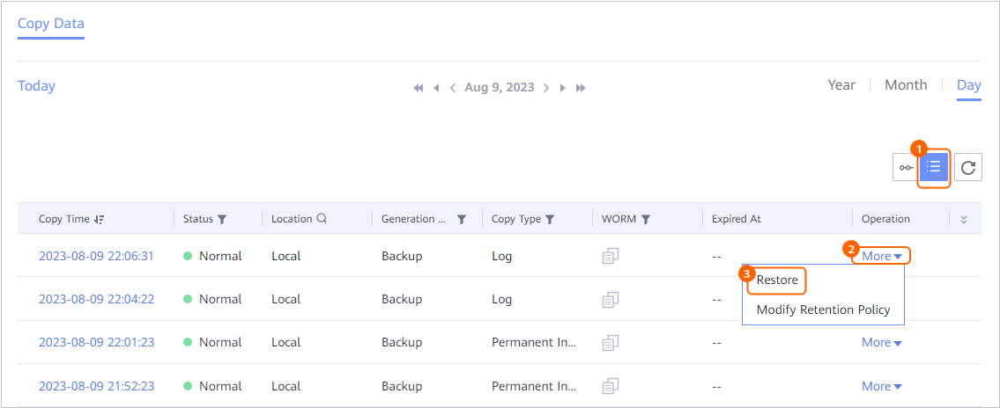
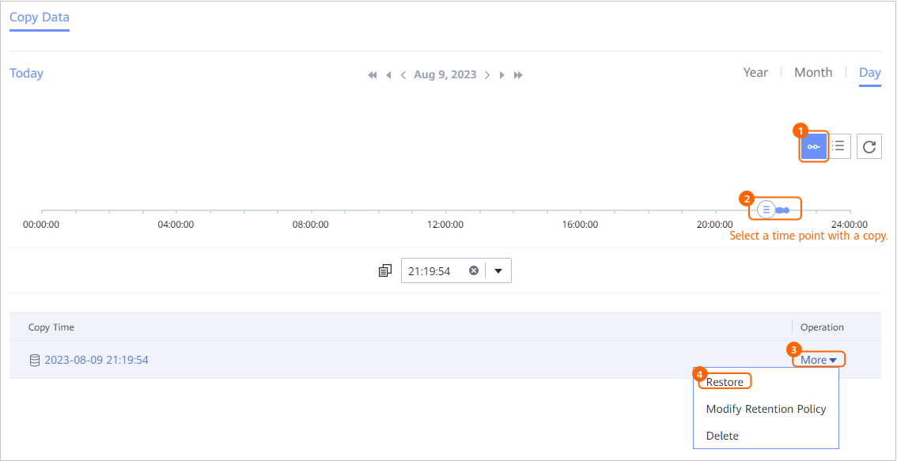

This section describes how to use a copy to restore a database that has been backed up. For 1.6.0 and later: Multiple instances in the same TDSQL cluster can be backed up or restored at the same time.
Prerequisites
- The NTP service has been enabled for the cluster and the clock source configurations are the same.
- During cluster instance restoration, ensure that the data synchronization user of the target cluster exists in the copy used for the restoration. Otherwise, the restoration fails.
Procedure
- Choose Explore > Copy Data > Databases > TDSQL.
- Search for copies by TDSQL resource or copy. This section describes how to search for copies by resource.
On the Resources tab page, locate the resource to be restored by resource name and click the name.
- Select the year, month, and day in sequence to find the copy.
If
 is displayed below a month or date, copies exist in the month or on the day.
is displayed below a month or date, copies exist in the month or on the day. - Specify a copy or point in time for restoration.You can specify a copy or any point in time between two copies for restoration.

If no archive logs are backed up at a time point, data cannot be restored to the time point.
- On the By Date tab page, select a year, month, and day in sequence to search for copies.
If
 is displayed below a month or date, copies exist in the month or on the day.
is displayed below a month or date, copies exist in the month or on the day. - Specify a copy or a point in time for restoration.
- Specify a copy for restoration.

- Specify a point in time for restoration.
Data can be restored to a specific point in time in the blue part on the timeline.
 indicates that a copy exists at this point in time. If no archive logs are backed up at a time point, data cannot be restored to the time point.
indicates that a copy exists at this point in time. If no archive logs are backed up at a time point, data cannot be restored to the time point.
- For 1.5.0, a maximum of 100 copies can be displayed on the timeline. You can click
 to view all copies.
to view all copies. - During point-in-time recovery, the information about the copy used for restoration cannot be obtained on the management page. Therefore, users cannot view the copy information of the restoration job on pages of the restoration job and related events.
- For 1.5.0, a maximum of 100 copies can be displayed on the timeline. You can click
- Specify a copy for restoration.
- Restore a TDSQL database.
- Restore non-distributed instances.
- Restore the TDSQL database to the original location.
- Select Original location for restoration.
- Click OK.
- Restore the TDSQL database to a new location.
- Set Restore To to New location.
- Select a cluster for restoration from the Target Cluster drop-down list.
- Set the target instance for restoration.
For 1.5.0, you can only select an existing instance as the target instance. For 1.6.0 and later versions: You can select an existing instance or create an instance. The database version of the selected target instance must be the same as that of the original instance. If you choose to create an instance, see Table 1.
Before creating an instance, ensure that the target cluster has sufficient resources to create the instance. Otherwise, the restoration will fail. For details about the resources of the target cluster, log in to the TDSQL CHITU management console and click View [Equipment Resources] on the Instance management page.
Table 1 Parameters for creating an instance Parameter
Description
DR Mode
Only the DR mode that does not exceed the number of data nodes in the target cluster can be selected.
Instance Name
Custom instance name.
Agent Host
Selects an agent host for the TDSQL service node.
Advanced
NOTE:If you do not set advanced parameters, the configuration of the original instance is used for restoration by default.
Model
Select the target model.
CPU (Cores)
The value ranges from 1 to 32.
Memory Size (GB)
The value ranges from 1 to 128.
Data Disk Size (GB)
The value ranges from 1 to 1500.
Log Disk Size (GB)
The value ranges from 1 to 300.
- Click OK.
- Restore the TDSQL database to the original location.
- Restore distributed instances.
- Restore the TDSQL database to the original cluster.
- Set Restore To to Original Cluster.
- Select the mode to be restored from the DR Mode drop-down list.
Only the DR mode that does not exceed the number of data nodes in the target cluster can be selected.
- In the Data Nodes area, select an agent host for the TDSQL service node.
- Set advanced parameters. For details about the parameters, see Table 2.
If you do not set advanced parameters, the configuration of the original instance is used for restoration by default.
- Click OK.
- Restore the TDSQL database to a new cluster.
- Set Restore To to New Cluster.
- Select the cluster to be restored from the Target Cluster drop-down list.
The zkmeta automatic backup function must be enabled for the selected target cluster. Otherwise, the restoration will fail.
- Select the mode to be restored from the DR Mode drop-down list.
Only the DR mode that does not exceed the number of data nodes in the target cluster can be selected.
- In the Data Nodes area, select an agent host for the TDSQL service node.
- Set advanced parameters. For details about the parameters, see Table 3.
If you do not set advanced parameters, the configuration of the original instance is used for restoration by default.
- Click OK.
- Restore the TDSQL database to the original cluster.
- Restore non-distributed instances.
- On the By Date tab page, select a year, month, and day in sequence to search for copies.
- Click OK.
Follow-up Procedure
After the non-distributed instance is restored, the username and password of the target instance will be overwritten by those of the instance corresponding to the copy used for the restoration. If the status of the target instance is Offline, update the username and password of the target instance.
- Choose Protection > Databases > TDSQL.
- Click the Non-distributed Instances tab.
- Click the name of the target instance.
- In the upper right corner of the page that is displayed, choose Modify > Operation.
- On the Modify page that is displayed, update the username and password.
- Click OK.